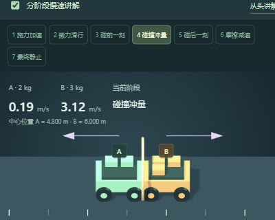
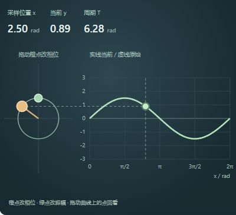
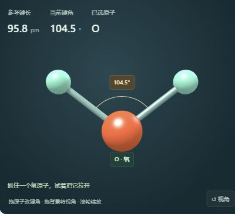

一份结构化提示模板
固定研究版本的文件树包含 README、SKILL.md、LICENSE。核心是生成规范，附样式与实现片段。
- 教学目标、公式、原理、小测验
- Three.js / SVG / 混合渲染选型
- 配色、布局、控件、输出格式
规范可以复用；实际执行依赖外部 AI。
从“让知识动起来”，到看清它真正提供什么
通过提示词规范指导 AI，将生物、物理、化学等知识转成互动课件，并可按知识顺序组织为系列课程。
WHAT IS ACTUALLY DELIVERED
固定研究版本的文件树包含 README、SKILL.md、LICENSE。核心是生成规范，附样式与实现片段。
AI 根据主题与规范选择表示方式、编写代码；生成的 JavaScript 处理参数、模型和动画。
力与碰撞、正弦函数、水分子，加入直接操作、参数联动、过程回看和模型检查。
HOW GENERATION & RUNTIME WORK
学什么？面向谁？
需要说明什么关系？
教学结构、技术选型
交互、视觉、输出要求
选概念、公式、几何
实现状态与事件逻辑
HTML / CSS / JS
原规范要求单 HTML
观察、调参、回看
结合解释理解知识
Skill 给出关键词判断示例：运动、分子等倾向 Three.js；函数、曲线等倾向 SVG；牛顿、能量等倾向混合模式。它是交给 AI 的规则与片段，具体选择逻辑仍需落实。
Three.js 画三维；SVG / 可选 D3 画二维图表；KaTeX 排公式；CSS / Tailwind 管布局；JavaScript 实现模型、控制与同步。绘制能力不等于科学求解能力。
研究实现差异：上游规定 CDN 与单 HTML，本研究使用本地依赖与拆分文件；上游建议欧拉 / Verlet 积分，碰撞原型另行采用分段解析计算。
VALUE BEYOND A SIMPLE PROMPT
未提供额外的核心生成能力。能否省时、减少错误或提高质量，需要同模型、同主题的对照验证。
已有价值是要求的整理；增益大小尚未测量。“统一要求”是规范本身的属性，“稳定产出好课件”仍是待验证的结果。
RUNNING EXAMPLES / BUILT IN THIS STUDY

进入演示 ↗物理 / THREE.JS + SVG
调质量、推力、摩擦、恢复系数；观察速度、动量、能量和停稳原因。

进入演示 ↗数学 / SVG
调整振幅、频率和相位；直接拖点，观察向量投影与曲线同步。

进入演示 ↗化学 / THREE.JS
旋转、选择原子、拖动氢原子改变键角，与参考结构比较。
案例能说明：这些展示与交互方式可以实现。案例尚不能说明：Skill 的因果增益、任意主题成功率或教学有效性。当前演示的视觉表达与操作负担仍需改进。
WHERE IT CAN BE APPLIED
运动、受力、波动、电磁
本研究有力学案例分子构型、反应步骤
本研究有分子几何案例细胞分裂、DNA 复制
上游声明方向，未做案例函数、几何、概率分布
本研究有正弦函数案例轨道、日月食、空间关系
上游声明方向，未做案例排序、数据结构、算法
上游声明方向，未做案例优先选择能明确对象、变量、关系和边界的主题；复杂化学反应、细胞机制和高精度仿真需领域模型与专业审校。
POTENTIAL VALUE / REQUIRES FURTHER WORK
复用教学、视觉与交互要求
模型、控件、单位、边界与回归检查
知识顺序、前置要求、练习与难度
科学审校、体验验收与生成后修复
教师编辑、版本管理、分发与学习记录
成体系的课程，还需每课目标、前置知识、统一符号、分层练习、可访问性与教师审核。
沉淀经过审核的主题、模型、解释与题目，形成可持续复用的课程资产。
复用模型与交互组件，建立生成、运行、检查、修复的可追溯流程。
让教师能编辑、组合和发布课件；学习记录与反馈需要另外建设。
BOUNDARIES & WHAT TO VERIFY NEXT
同一模型、同一主题，比较简短提示、完整自写提示、该 Skill 三组，保留多次运行记录。
观察科学错误、首轮可用性、修改次数、总耗时、操作难度与学习者理解。
这是后续评估方案，本研究尚未开展。一份值得参考的科学互动课件生成规范。
扩展价值来自正确模型、清楚表达、课程组织和验证流程的持续积累。